Magic Switch
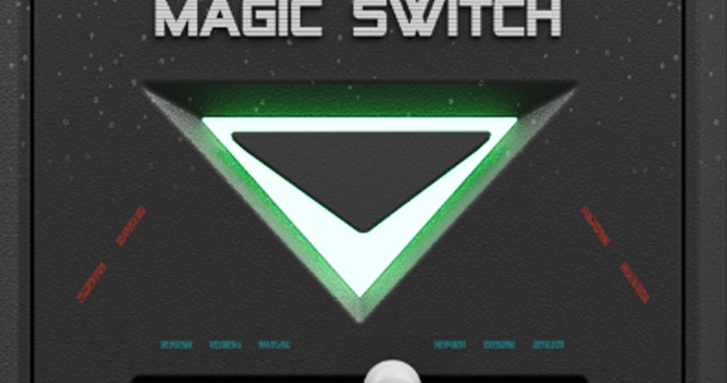
Magic Switch is a lo-fi chorus effect inspired by the classic analog ‘one-button’ chorus FX modules that were
built into synthesizers back in the 80s. The plugin instantly delivers that washed out and slightly
out-of-tune chorusing effect reminiscent of 80s synth music. (Scroll down to download the plugin)
OSL Chorus
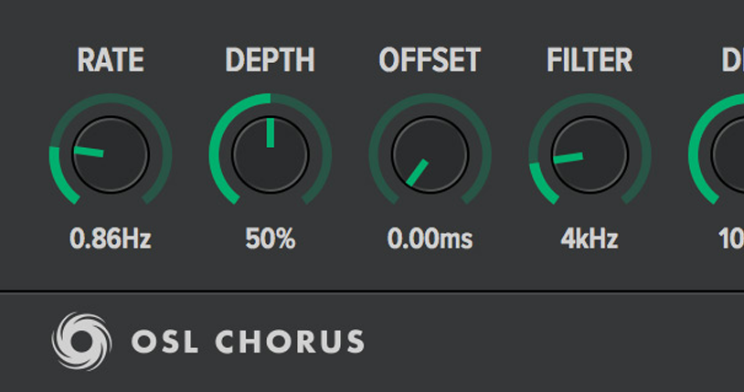
OSL Chorus is modelled after the Juno 60’s onboard chorus. It produces rich, wide choruses that are perfect
for bringing dry synthesizers to life, but it sounds equally good on guitar, bass, and other instruments. In
its default configuration OSL Chorus emulates the original unit, but adjustable parameters let you dial in
custom choruses that range from subtle to extreme.
DLYM

DLYM is a free ‘Delay Modulator’ plugin which produces flanger and chorus style effects using Imaginando’s
powerful processing technology. Taking inspiration from DRC’s chorus effect, DLYM expands on the
functionality, and makes it available for free. Whether you’re looking to add just a touch of depth to your
sounds or radically change them, DLYM can do both.
Action Tremolo
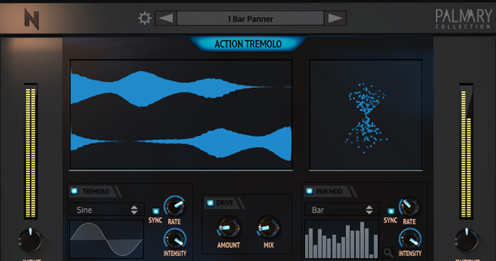
Action Tremolo is an advanced pan and volume modulation unit with an analog saturation engine. Easy to use,
simple and highly customisable UI controls makes it a total blast. There are three modulation sources: a
custom shape envelope follower, the LFO with 5 waveforms, a 32-step sequencer and each modulation sources
can be assigned in-sync or free-sync modes.
MTremolo

MTremolo provides a definitive tremolo sound with an adjustable shape, including editable waveforms and
harmonics. The plugin can synchronize automatically to your host and is capable of handling up to eight
channels of surround audio.
DLYM
DLYM is a free ‘Delay Modulator’ plugin which produces flanger and chorus style effects using Imaginando’s
powerful processing technology. Taking inspiration from DRC’s chorus effect, DLYM expands on the
functionality, and makes it available for free. Whether you’re looking to add just a touch of depth to your
sounds or radically change them, DLYM can do both.
MFlanger

MFlanger is a versatile flanger with top-class sound, variable oscillator shape for greater flexibility, and
integrated tube saturation. This adds up to a responsive plugin with a quintessential analog sound.
Blue Cat Phaser
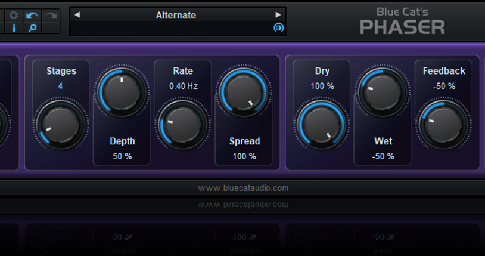
Modeled after vintage analog phaser circuits, Blue Cat's Phaser reproduces this old vintage phasing effect
that you can find on so many recordings, but with the precision of modern digital processing techniques. You
can choose to apply up to 32 phasing stages, pushing the model to its limits, or create a subtle phasing
effect with wet and feedback parameters set to a few percents.
OrilRiver

OrilRiver is a free algorithmic stereo reverb that can rival the quality of commercial reverbs. With this
plugin it is possible to simulate the reverberation of a small room and great hall. OrilRiver has an
intuitive interface thanks to which the user can quickly adjust the desired reverb sound.
Dragonfly Reverb
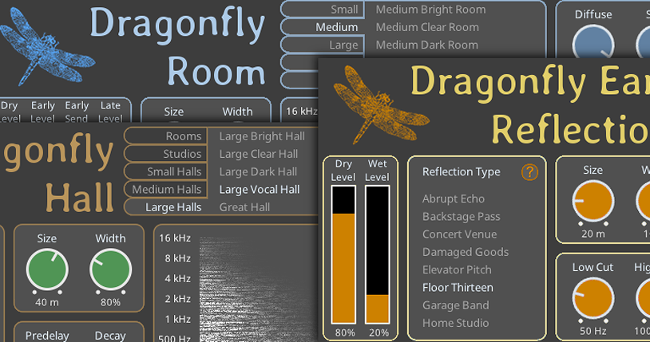
Dragonfly Reverb is a bundle of free reverb effects, consisting of plate, room, hall, and early
reflections.
Ambient Reverb
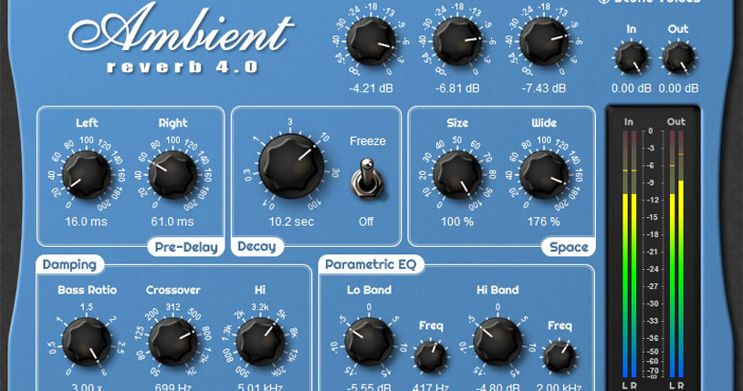
Ambient Reverb is an algorithmic reverb. It is intended first of all for operation with sound material in a
ambient genre, though with success it can be applied also in other musical styles and the directions.
TAL Reverb-II

TAL Reverb-II is a super diffuse and lush reverb effect with a fast build up time. Ideal for ambient reverb
sounds.
Super Massive
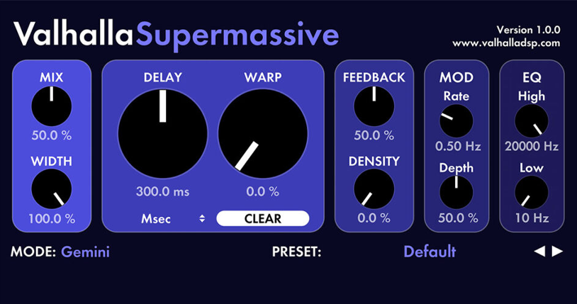
ValhallaSupermassive has been designed from the ground up for MASSIVE delays and reverbs. Blow your mind and
your music to new levels of consciousness and experience. Get ready for luscious clouds of reverb,
otherworldly delays, swelling waves of feedback unlike any you’ve heard before.
Convology XT

Convology XT is a zero latency convolution reverb plugin which comes bundled with a set of 70 free vintage
reverb impulse responses. The plugin is also capable of loading external impulse responses in WAV format.
Any audio file on the user's computer can be accessed using Convology XT's file browser.
Cloud Seed
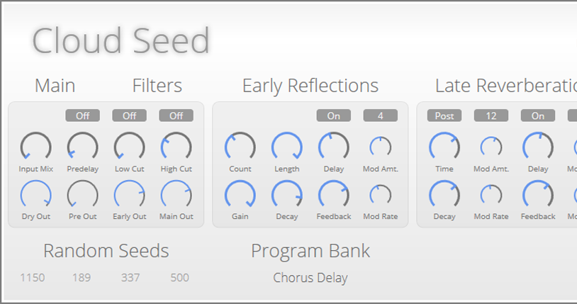
Cloud Seed is an algorithmic reverb plugin for emulating huge, endless spaces and modulated echoes. It is
best employed as a special effect, for creating thick, lush pads out of simple input sounds.
Freq Echo
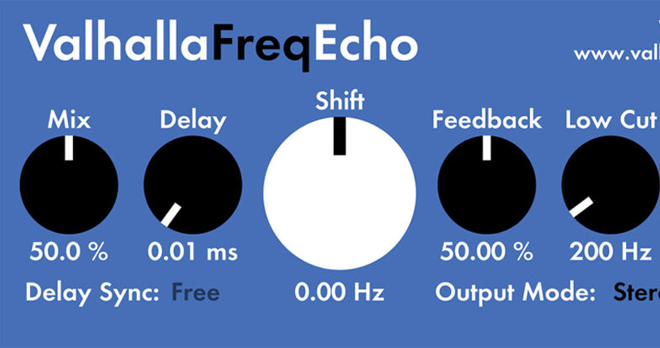
Freq Echo combines low and high pass filters with a bode style pitch shifter in the feedback path for
everything from subtle chorusing and double tracking to barberpole phasing and flanging to endless
glissandos and runaway echos.
Snapin Delay

The kHs Delay can be run both free running and tempo synced with various stereo and feedback options. Most
notable however is the duck feature, which optionally only lets the echoed sound through when there is no
dry input signal. This allows for long and heavy delay while still avoiding clutter over the original sound.
Super Massive
ValhallaSupermassive has been designed from the ground up for MASSIVE delays and reverbs. Blow your mind and
your music to new levels of consciousness and experience. Get ready for luscious clouds of reverb,
otherworldly delays, swelling waves of feedback unlike any you’ve heard before.
Hysteresis

Hysteresis is a versatile effects processor geared toward electronic musicians and sound designers. Process
anything from drums to synths, guitars, vocals and sound effects. On top of being able to create contorted
signal mutations, it can also be tamed to generate classic delay effects.
Lagrange
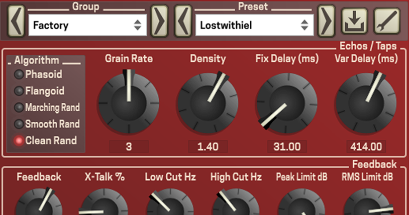
Lagrange is a unique stereo delay system producing other worldly echoes using granular techniques, where each
grain is from a different point in the delay buffer.
++bubbler
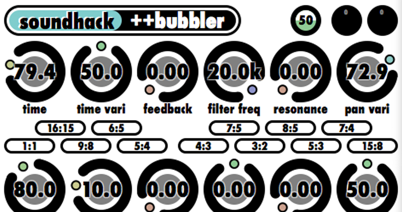
++bubbler is a granular delay in which grains are pulled from the delay line with randomized start time,
delay time, reversal, panning and pitch shift values. As pitch shift can be distributed to multiple
simultaneous grains, chords can be played with the on screen buttons, or by sending MIDI to the plugin.
++bubbler uses 8 channels of grains which can give you an extremely dense cloud of sound.
TDR Nova
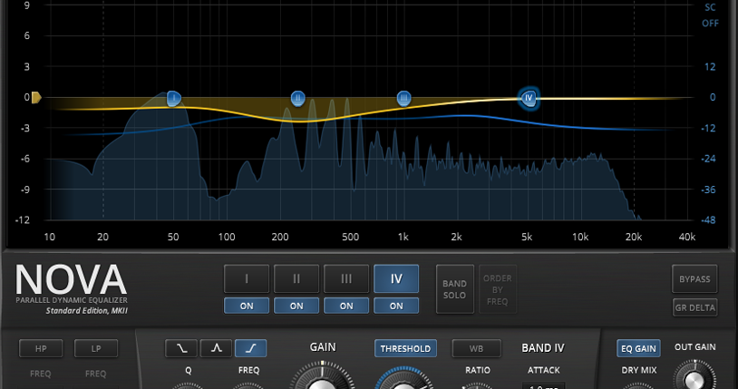
NOVA is a parallel dynamic equalizer. Appearing in the familiar layout of a parametric equalizer, each band
also includes a full featured dynamics section allowing the processor to cover an impressively wide range of
applications. Be it a master lacking density, the drum bus asking for more crispiness, or a sibilance
problem in your perfect take: NOVA has an elegant answer.
Triple EQ

This free EQ includes a low shelf filter, a high shelf filter and a boost/cut peak filter. Its wide range of
gain (+/-40 dB per band) and bandwidth (.01 to 5 Octave) makes it very versatile to create any filter shape.
The three filters are linked together so that when you change the center frequency or the bandwidth, the
parameters of the three filters are modified accordingly: you can control the entire equalizer
characteristics with a single mouse click.
PTEq-X

PTEq-X is a digital emulation of 3 famous vintage passive program equalizers. It has been developed to have
all the characteristics of the original hardware, plus some circuit improvements and additional features to
increase its versatility. PTEq-X is meant to be used as a studio equalizer for tracking, mixing and
mastering. (Scroll down to download the plugin)
VOS SlickEQ

TDR VOS SlickEQ is a mixing/mastering equalizer designed for ease of use, musical flexibility and impeccable
sound. Three (and a half) filter-bands arranged in a classic Low/Mid/High semi-parametric layout offer fast
and intuitive access to four distinct EQ modes, each representing a set of distinct EQ curves and behaviors.
An elaborate auto gain option automatically compensates for changes of perceived loudness during EQ
operation.
ReaEQ
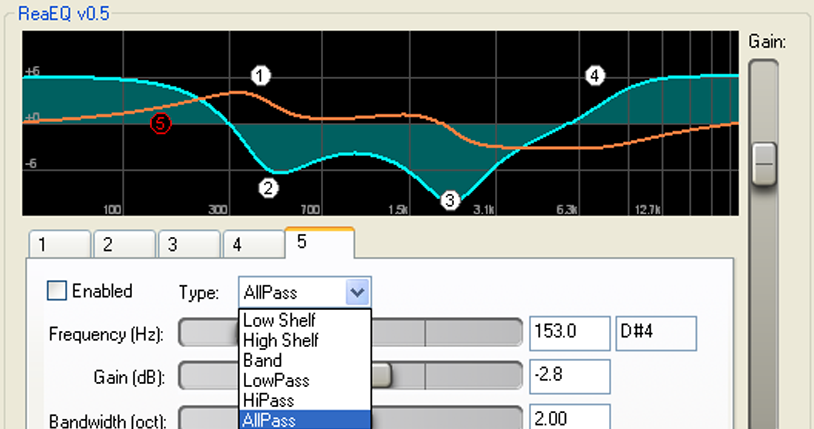
ReaEQ is a free EQ plugin, featuring unlimited bands, many filter types, and frequency and phase reponse
displays.
Stereo Tools
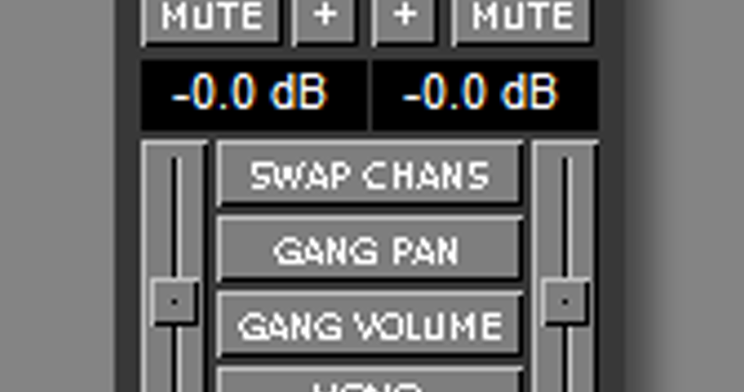
Stereo Tools is a simple to use utility plug-in that allows you to pan or position both the left and right
channels independently of one another. This is a 2 input and 2 output plug-in. It works well for stereo
files that you don't want to have to convert to mono or if you want to fix a problem with the stereo file.
PanCake

PanCake is a free plugin for most flexible panning modulations. You can construct your own modulation curves.
They can be easily drawn using soft or hard control points, thus producing gentle transitions or sharp bends
in the waveform. PanCake's LFO can be beat-synced to your DAW, from a fast 1/128 note modulation up to 32
bars. It can also be set free-running from 0.02 Hz to 5.24 kHz, and can be triggered via MIDI.
Ozone Imager

Ozone Imager is a stereo imaging plugin. Born from Ozone 8’s legendary Imaging technology, Ozone Imager can
narrow or widen your stereo image with simple controls, stunning visuals, and incredible sound.
Panagement
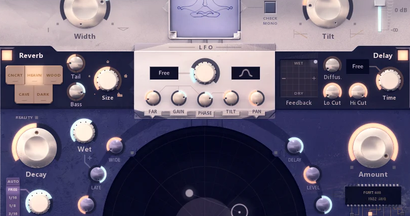
Panagement is the spatialization laboratory that has found its way to thousands of studios around the world.
Panagement gives you raw power over your stereo tracks, featuring binaural distance panning,
distance-modeled reverb, binaural delay, and more.
360 Workstation
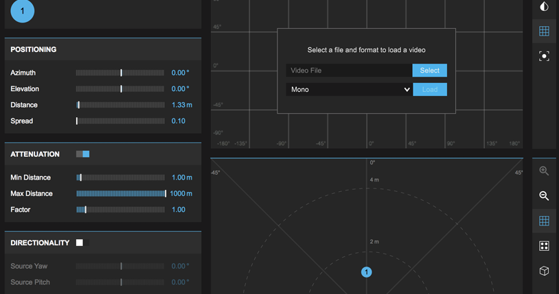
The Facebook 360 Spatial Workstation is a software and plugin suite for designing spatial audio for 360 video
and cinematic VR. It includes plugins for popular audio workstations, a time synchronized 360 video player
and utilities to help design and publish spatial audio in a variety of formats.
Wider

Wider takes the massively popular stereo section from its sibling, Manipulator, and creates the illusion of
an expanded stereo image of a mono signal to an awe-inspiring amount of width. However, Wider is a unique
stereo plugin in the sense that it is completely “mono-compatible”, meaning that any signal that has been
extended will always remain in phase with itself, even if summed to mono.
AMBEO Orbit
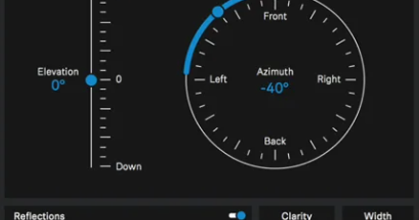
AMBEO Orbit is Sennheiser's free binaural panner plugin, designed to facilitate mixing immersive binaural
content. You can now effectively position additional mono or stereo sources into the 3D sound field,
avoiding the unwanted coloration. In fact, the patented clarity control allows you to choose how much of the
binaural coloration to apply.
MCompressor

MCompressor provides refined compression. It features an adjustable compression shape, giving you the power
to create dynamic sound effects, and a range of up-sampling options for a crystal clear sound.
DC1A

DC1A is a high-quality dynamic range compressor based on Klanghelm's premium DC8C plugin. It features a
streamlined control scheme which makes it suitable as the go-to compressor for mixing.
TDR Kotelnikov
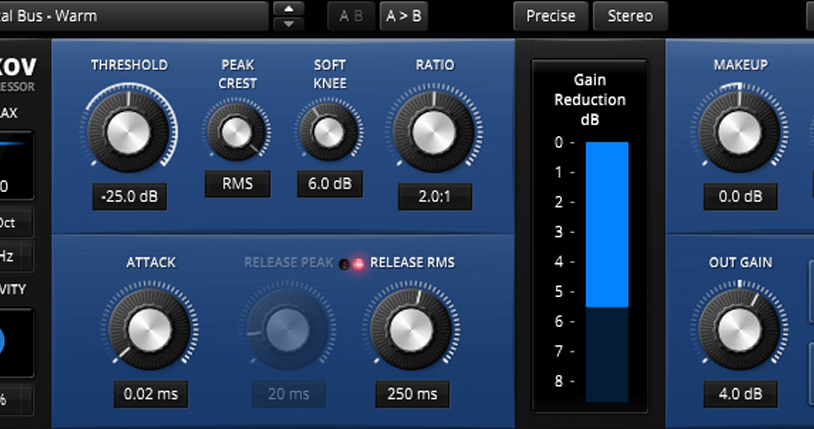
TDR Kotelnikov is a wideband dynamics processor combining high fidelity dynamic range control with deep
musical flexibility. As a descendant of the venerable TDR Feedback Compressor product family, Kotelnikov has
directly inherited several unique features such as a proven control scheme, individual release control for
peak and RMS content, an intuitive user interface, and powerful, state of the art, high-precision
algorithms.
OTT

Xfer Records OTT is a free re-creation of a popular aggressive multiband upwards/downwards compressor set-up
used by many electronic producers.
Krush

With its bit crushing and downsampling algorithms, Krush combines the crispy taste of the digital realm with
the warmth of its drive stage and analog modeled resonant filters. A modulation section allows you to
quickly add extra life to the sound by modulating any parameter.
Saturation Knob

The free plug-in Saturation Knob is a modeled output distortion that can be used anywhere you need some grit.
Use it to fatten up bass lines, add some harmonics and shimmer to vocals, or simply destroy your drum loop.
FreeAMP

FreeAMP resembles the type of complex analog saturation you'd expect to hear coming from a combination of
tape and tube gear. It's not overly harsh and it truly shines when used for subtle processing of the audio
signal on the input.
IVGI
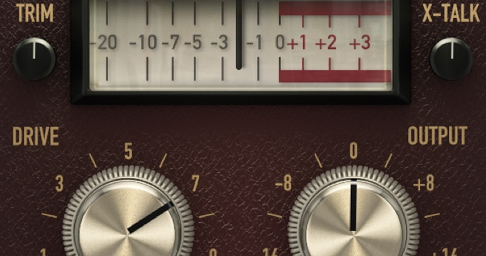
IVGI is a soft saturation device, designed for use both on individual channels and in the stereo bus. It
features 4 knobs which can be used to alter the character and transparency of the applied saturation.
NCAR
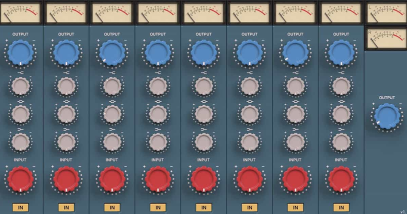
NCAR is a multi-channel analog summing plugin. It emulates an eight-channel analog summing console with a
three-band EQ and a preamp on each channel. The channel equalizers have three fixed frequency bands ( 110Hz,
1.6kHz, and 10kHz). Each stereo channel also features a VU meter for proper gain staging, a bypass switch,
mute switch, adjustable input/output gain, and an editable text box for channel name entry.
Renegate

Renegate Free is a smooth noise gate plugin that is quick and easy to operate. The plugin utilizes
program-dependent hysteresis to detect the unwanted noise and combines that with a look-ahead detection
algorithm to preserve the transients. It also features a program-dependent auto-release to ensure a
natural-sounding gating effect.
A1TriggerGate

A1TriggerGate is a rhythmic trance gate used to modulate volume through the use of a sequencer. It can turn
static sounds like pads and drones into exciting rhythmic sequences.
GGate
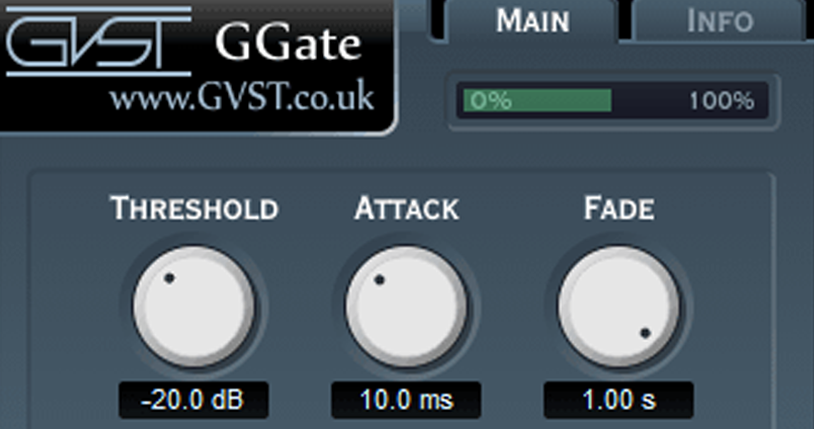
GGate is a simple noise gate, useful when source material contains background noise during "silent" passages,
such as the hum of an amplifier or artefacts from an effect chain. The main portion of the source audio is
usually significantly louder than this background noise, so when GGate receives an appropriate boost in
amplitude, it knows that it's time to let the signal pass through.
Snapin Limiter

Whether you want to crank the last drops of gain out of your track or just want to control a few loud peaks,
a Limiter can be the weapon of choice. By looking a little bit into the future, the Snapin limiter can make
sure your signal never goes louder than you want it to without distorting or destroying transients. Even
with the knob turned to 11.
Limiter No6

Limiter No6 is a freeware modular limiter suited for mastering purposes. It features 5 dynamics modules,
high-quality signal processing, mid/side and multiband modes, and more.
Frontier

Fontier is an audio limiter with adjustable release time (fast, medium, or slow), automatic gain makeup
functionality, and optional soft clipping on the output. It also features a large gain reduction meter, a
built-in preset manager, selectable input channel control (left, right, or mid), and an advanced options
menu for adjusting the processing quality when used in real time and while rendering the song.
Noiiz Filter
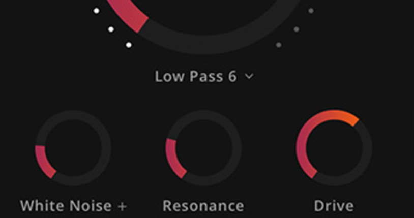
The Noiiz Filter is a perfectly simple new filter plugin. With expertly designed analogue modelling DSP, a
truly
unique noise generator and a super fat overdrive circuit, this will become your go to sound sculpting
filter.
Filterjam
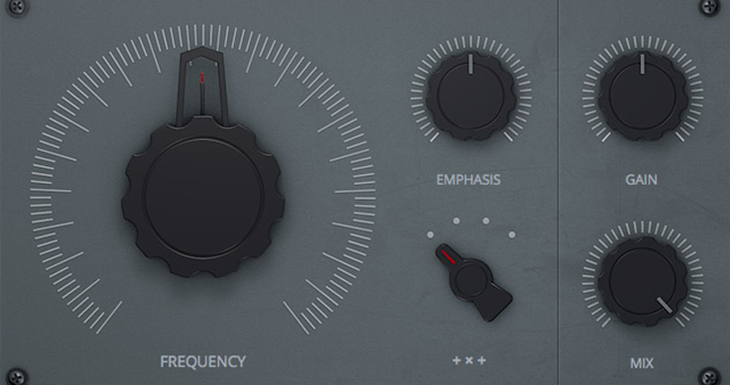
Filterjam is a multi-band resonant filter delivering weird ringmod-like filtered sounds. The input signal is
divided into 4 bands that are then summed or multiplied together according to the selected mode. Filterjam
can be very harsh or gentle, it can add brightness or depth to synth sounds, but it can also completely
mangle acoustic sources.
Filterstep
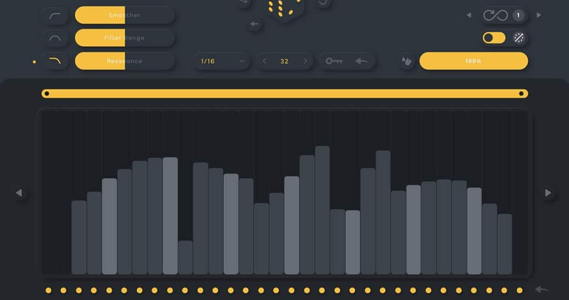
Filterstep is a creative multi-mode filter effect with a built-in step sequencer. The plugin is optimized for
creating complex, ever-evolving effects with intricate rhythmic movement patterns. It is the perfect sound
design tool for modulating static sounds and for transforming boring pads and drones into rhythmic
soundscapes.
Tal Filter 2
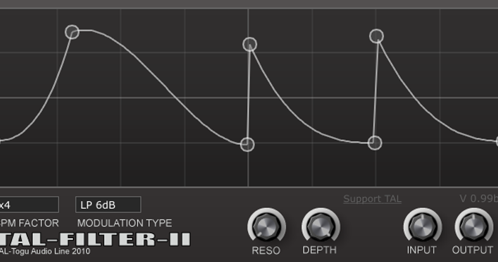
TAL-Filter-2 is a host synced filter module with different filter types, panorama and volume modulation
possibilities. The device includes all 4x oversampled TAL-NoiseMaker filters: LP 24 dB, LP 18dB, LP 12dB, LP
6dB, HP 12 dB, BP 12dB, N 12 dB. It's possible to saturate/distort the input signal by raising the input
volume with the input control if you use a filter as modulation type.
MOscilloscope
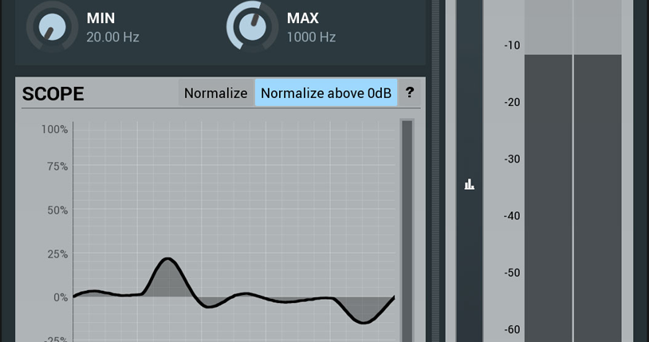
With most oscilloscopes, you’d have to do some manual work first in order to zoom onto the desired section of
the waveform. But MOscilloscope does all the hard work for you, thanks to its built-in pitch detector which
locks on to a single cycle of the waveform like a boss.
SPAN
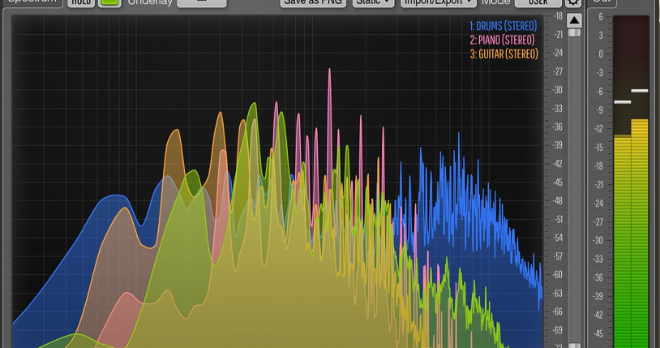
SPAN is a free real-time spectrum analyzer for professional sound and music production applications. It
provides you with a very flexible "mode" system which you can use to setup your spectrum analyzer
preferences. You may specify Fourier block size in samples, FFT window overlap percentage, spectrum's visual
slope.
Loudness Meter
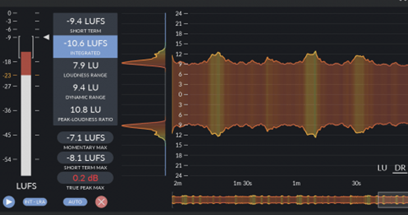
The free version of Youlean Loudness Meter has everything you need to measure the true perceived loudness of
your audio. Loudness graphs come with the ability to go through history and this will help you to pinpoint
the problems in your measurements. You will achieve a better mixdown with more control and the better
understanding of the loudness. (Scroll down to download the plugin)
MAnalyzer

MAnalyzer is an advanced spectral analyzer and sonogram containing unique features such as smoothing,
normalization, super-resolution, prefiltering and deharmonization. The included meters provide a peak meter
and EBU R128 and ITU-R BS 1770-3 compliant loudness meter.
MStereoScope
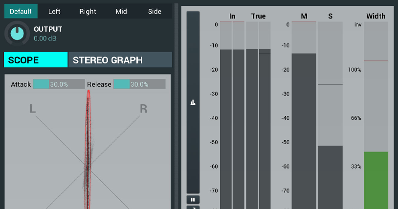
MStereoScope is an advanced stereo field analyzer, which also lets you solo specific parts of the signal -
mid, side and individual channels.
Amplitube CS

AmpliTube 4 is a guitar and bass tone studio for Mac/PC that works as a standalone application and as a
plug-in for your favorite DAW. The free edition includes multiple amps, cabinets, and effects for you to
sculpt your sound in any way imaginable.
Guitar Rig Player
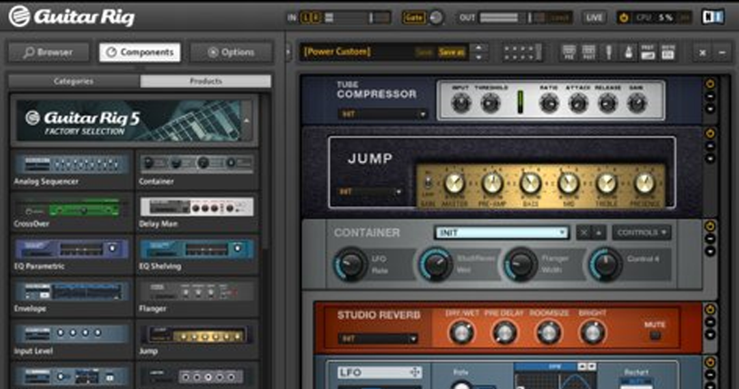
Guitar Rig Player is a free effects processor – great for building effects chains, for warming up a signal,
and yes, also for recording guitar. The included factory selection provides a British-style tube amp plus a
matched cabinet, and 13 effects and sound modifiers.
Ignite Amps Collection
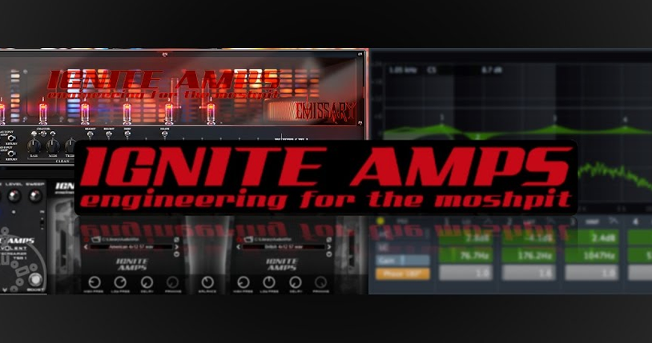
Ignite Amps uses state of the art analog modeling technology, deriving systems of non-linear differential
equations directly from schematics and solving them in real time through carefully optimized code. Their
simulation softwares are available as plugins to be used for playing, testing, recording and mixing
purposes. (Scroll down to see the plugins)
GTune

GTune is a free tuner for audio inputs and instrument plugins.
Graillon
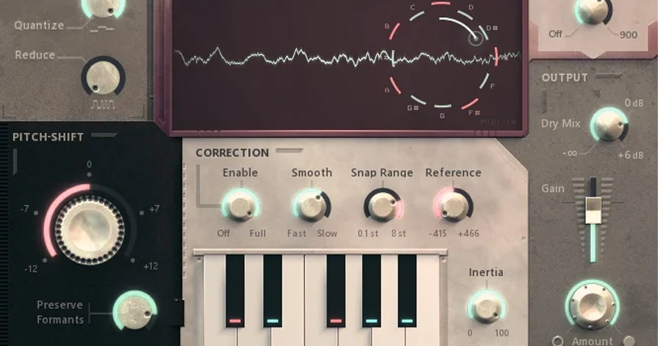
Graillon is a live vocal changer that brings a world of possibilities right into your DAW, with carefully
designed features, which include live pitch tracking, pitch shifting, and autotune.
MFreqShifter
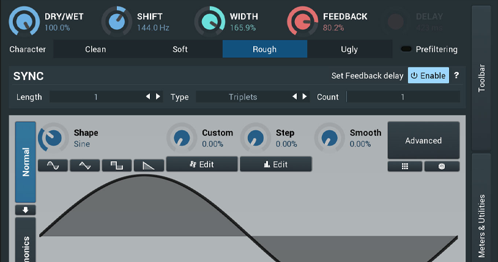
MFreqShifter is an extremely versatile frequency shifter. Unlike pitch-shifters it doesn't keep harmonic
relationships and can provide everything from mild stereo expansion to complete sonic destruction.
TAL Vocoder

TAL-Vocoder is a vintage vocoder emulation with 11 bands that emulates the sound of vocoders from the early
80’s. It includes analog modeled components in combination with digital algorithms such as the SFFT
(Short-Time Fast Fourier Transform).
VeeSeeVSTRack
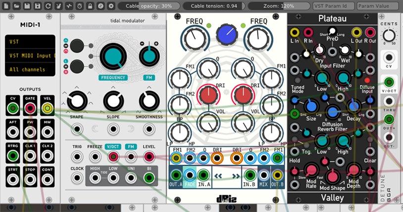
VeeSeeVSTRack is an adaption of VCV Rack for the VST2.4 format. VCV Rack is a free open-source virtual
modular synthesizer, where multiple modules can be connected to synthesize a sound. The plugin contains
several VCOs, LFOs, mixers, and other standard synthesizer modules, as well as many additional community
modules.
Voltage Modular Nucleus
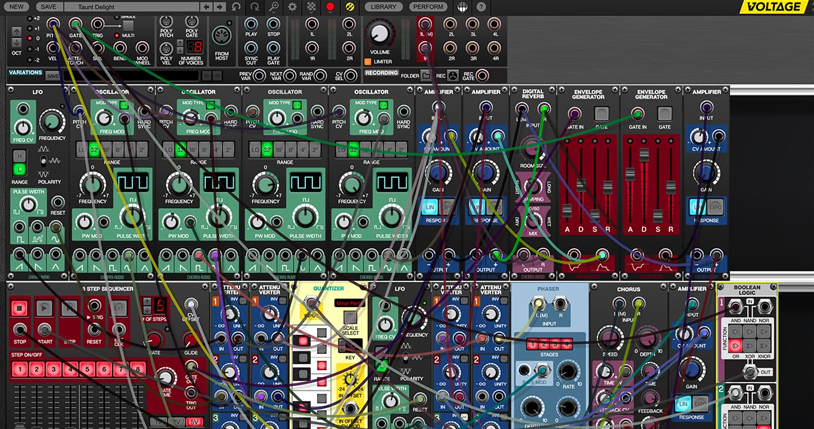
This collection of 22 modules and 176 presets is the ultimate introduction to modular synthesis. This package
includes all of the fundamentals of subtractive analogue synthesis, including oscillators, filters, envelope
generators, amplifiers, and mixers, plus a sequencer, arpeggiator, and a full suite of useful utility
modules and powerful effects modules.
Snap Heap

Snap Heap is based around up to 4 routable lanes of modular "snapin" effects. Each lane can contain any
number of snapins (including free ones), and have individual gain, panning and dry/wet mixing. You can also
move things around easily using a state of the art technology from the future of 1984 called "drag and
drop".